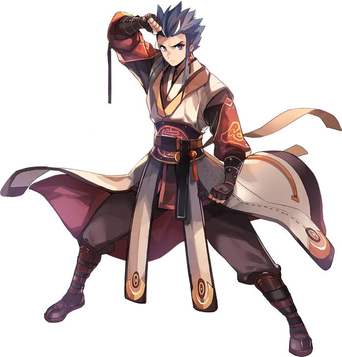

Third tier
Sky Emperor
Sky Emperor is the alternative advancement option for Star Gladiators. While the Star Emperor expands their abilities by drawing closer to the cosmos, the Sky Emperor focuses their efforts on how those same celestial bodies interact with the earth, tracking their movements through the sky to draw their power out.
Rather than expanding on the previous cosmic skills that the Star Gladiator made use of, the Sky Emperor gains a new parallel set of skills to be utilized alongside them. These fall into three categories: Daylight Skills, focused on single target damage that utilizes Burning, Int, and Dex; Nightfall Skills, that focus on dealing AoE damage, spreading status effects and using Vit and Agi; and the Celestial Skills, a mixed branch that both stands on its own and provides ultimate skills for the Daylight and Nightfall branches.
While the Sky Emperor uses their skills, they will gain a new Celestial Alignment to go alongside their Cosmic Alignment. Rather than a static buff that affects all skills, this Celestial Alignment is a constantly shifting state, tracking the motion of the sun and moon through the sky, and altering the skills the Sky Emperor uses as it does. Learning to manipulate and accommodate this ever shifting alignment is key to maximizing the Sky Emperor's potential.
One last skill caps off the Sky Emperor's tree, paying homage to the Umbral line of skills that seems otherwise all but forgotten in this advancement. Encroaching Darkness immediately purges the user's Celestial Alignment, then grants a powerful defensive buff for a short duration, giving them an opportunity to escape even the most dangerous situations.

Where it sits
Skill list
Skills
Skill names and effects are kept in English because that is how they appear in game.
- Sunrise
Draws on the light of the sun, striking enemies with an attempt to inflict various statuses. Naturally attempts to inflict the Burning Status. If the user is in the Rising Sun state, instead inflicts the Internal Bleeding Status. If in High Noon, instead the damage is treated as half burning, half bleeding damage. Will fail if the user is in Nightfall.
- Brilliant Noon
Calls down the wrath of the noonday sun to scorch their target. If the user has no Celestial State, the target's Burning is enhanced. If they are in the Rising Sun state, the target's Internal Bleeding is enhanced. In High Noon, the skill is treated as half burning, half bleeding damage. Will fail if the user is in Nightfall.
- Duskfall
The user calls on the power of the setting sun to finish off their opponent. Deals significant damage to the target and refreshes the Cooldowns of Sunrise and Brilliant Noon, then shifts the user's Celestial State forward by one into Daylight. If the user has no state or is in Sunrise, it deals additional damage to Burning and Bleeding enemies respectively. During High Noon, it deals additional damage to both, and the Cooldown refreshing effect is disabled. Will fail during Nightfall.
- Moonrise
Draws on the power of the moon to strike all nearby enemies. With no Celestial State, attempts to inflict the Blind status. If in Rising Moon, attempts to inflict Vulnerable. In Midnight, deals additional damage based on the user's Blind and Vulnerable Potency. Will fail if the user is in Daylight.
- Dead of Night
The user delivers a whirling kick, scattering enemies with the power of the moon. If the user has no Celestial State, refreshes the Blind duration of all enemies struck. If the user is in Rising Moon, it refreshes the Vulnerable duration instead. In Midnight, this skill deals bonus damage based on the user's Blind Potency and Vulnerable Potency. Will fail if the user is in Daylight.
- Breaking Dawn
Releases a burst of celestial energy to strike all enemies in the area and refresh the Cooldowns of Moonrise and Dead of Night. If the user has no Celestial State or is in Moonrise, deals additional damage to Blind or Vulnerable enemies respectively. If in Midnight, deals additional damage to both, and the Cooldown refreshing effect is disabled. Will fail if used in Daylight.
- Celestial Miracle
The user enters a state of perfect harmony with the celestial lights, charging their attacks with their strength. Blocks the user from shifting their Celestial State, and causes all Sky Emperor skills to deal reduced damage based on the user's remaining SP. If Cosmic Union is active, its autocasts are replaced with Sky Emperor skills. The skills will autocast in the following order: Sunrise > Brilliant Noon > Duskfall > Moonrise > Dead of Night > Breaking Dawn The skills will be cast at the same level learned by the user. Once Breaking Dawn has been cast, Cosmic Union returns to its original behavior.
- Celestial Judgement
The user calls down the wrath of the sky, raining destruction in a wide area around them. Enemies struck take massive damage. If used during Daylight, the state ends and all Daylight skills have their Cooldowns refreshed. If used during the Celestial Miracle state, the skill's SP Cost is removed and the autocast chain returns to Sunrise.
- Celestial Blast
The user infuses the energy of the sky into their hands and feet, inflicting a single devastating blow on the targeted enemy. If used during Nightfall, the state ends and all Nightfall skills have their Cooldowns refreshed. If used during the Celestial Miracle state, the skill's SP Cost is removed and the autocast chain returns to Sunrise.
- Encroaching Darkness
The user calls on the cosmic darkness of the universe, drowning out the light of the celestial bodies. Immediately ends the user's current Celestial State, then causes all attacks against the user to miss for a short time.
Come find out what changed
Make an account now, grab the client, and be there when the servers go up.